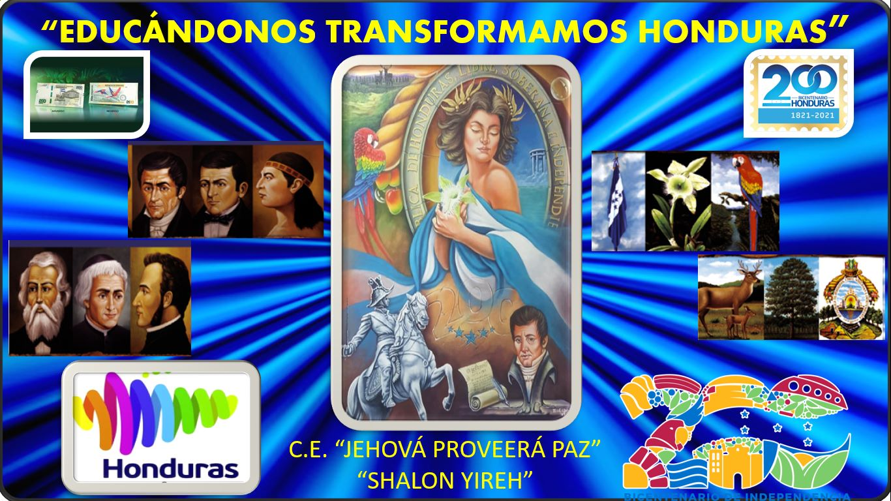

Shalon Yireh

El Instituto Shalon Yireh es una institución educativa privada ubicada en Comayagüela, Honduras. Ofrece educación
primaria y secundaria a niños y niñas de todas las edades. Su lema es "Educando para la vida".
El instituto fue fundado en 1990 por un grupo de padres y educadores que querían brindar una educación de calidad
a sus hijos. Desde entonces, el instituto ha crecido y se ha convertido en una de las instituciones educativas más
reconocidas de la zona.
El instituto cuenta con un equipo de docentes calificados y comprometidos con la educación de sus estudiantes. El
plan de estudios del instituto está diseñado para desarrollar las habilidades académicas, sociales y emocionales
de los estudiantes.
El instituto ofrece una variedad de actividades extracurriculares para que los estudiantes puedan desarrollar sus
intereses y habilidades. Estas actividades incluyen deportes, arte, música, teatro y clubes de interés.
El instituto Shalon Yireh está comprometido con la formación de ciudadanos responsables y comprometidos con su
comunidad. El instituto promueve valores como la honestidad, la responsabilidad, el respeto y la solidaridad.
Mision
La misión del Instituto Shalon Yireh es "Educar para la vida". Esto significa que el instituto se compromete a brindar una educación integral que prepare a los estudiantes para el éxito en la escuela, en la vida y en la sociedad. Para cumplir con esta misión, el instituto se enfoca en los siguientes objetivos: Desarrollar las habilidades académicas de los estudiantes. El instituto ofrece un plan de estudios riguroso que prepara a los estudiantes para el éxito en la escuela y en la universidad. Desarrollar las habilidades sociales y emocionales de los estudiantes. El instituto cree que las habilidades sociales y emocionales son tan importantes como las habilidades académicas. Por eso, el instituto ofrece una variedad de actividades extracurriculares que ayudan a los estudiantes a desarrollar estas habilidades. Formar ciudadanos responsables y comprometidos con su comunidad. El instituto promueve valores como la honestidad, la responsabilidad, el respeto y la solidaridad. El instituto cree que estos valores son esenciales para la formación de ciudadanos productivos y participativos.
Matriculas abiertas
Matriculate fecha: 17 al 23 de enero 2024
Llamanos
Nuestro numero: 2201-7825 o 2201-1610
Precios
Precios por curso y nivel de educacion.